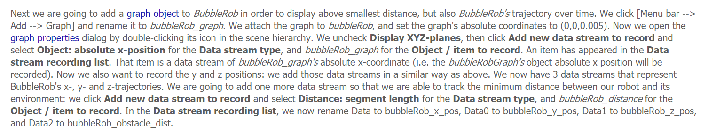
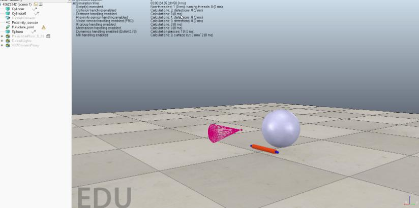
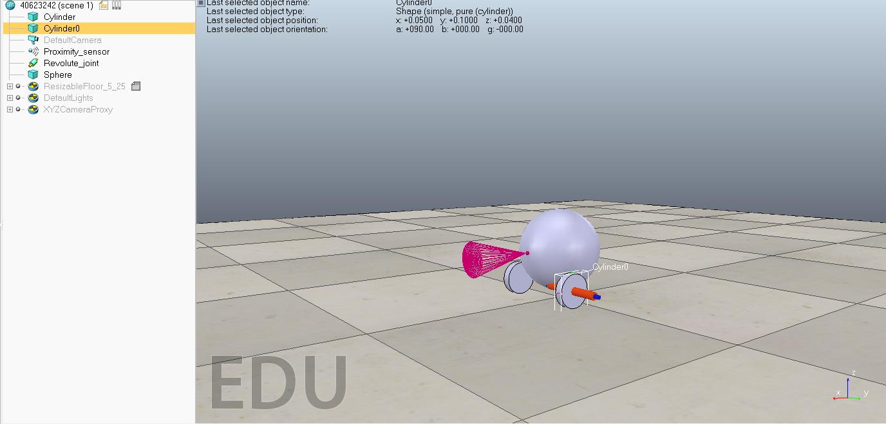

20190329 week6
這周在進行 bubbleRob 的 V-rep 模擬，一開始對軟體不熟悉，加上又都是英文的，在操作上有許多的問題，但多試幾次後有比較好一點，在英文閱讀上也增加了許多耐心，遇到不會的單字以及操作上的問題，也能慢慢去克服了。過程中容易有步驟做錯就發生問題，要很詳細的去檢查是否哪裡出問題，真的要花費一些時間。

40623204
心得:這週因為該畫的圖都畫完了，所依我跟著大家練習模擬 v-rep ，上學期並沒有實際操作過，所以並不會打開，也是其他組員教我我才會的，後來看著老師給的資料慢慢做，但因為是英文，所以花了不少時間翻譯單字，下週會多花一些時間慢慢跟上大家的腳步，成功模擬出來。
40623217
這星期我開始觸碰關於vrep的相關內容，雖目前分工並非確定，可是我基本能碰什麼就盡量學習什麼，在我剛碰沒多久，一看見一堆自己根本沒見過的東西，老實說我其實很膽怯，因為看見這些後，並沒有什麼操作的實際感，或許是全都英文的關西，但是再困難的東西給我，我都得要去認得並摸索，目的只是想著如果自己不學這東西是可以，可是只是以自己的時間和自身的精力來衡量，不去學習實在是不行，現在我只知道這軟體能過透過呼叫系統內部的部件來進行組合做出簡易的構想藍圖，但我覺得當從其他繪圖軟體匯入vrep時，部分的構件也得想辦法做更改或是使物體至少偏差不可過大(前提是必須符合物理定義上的運動)，我也想過是否可以讓手足上的人偶能在前1秒預測球的運動方向，如果可以那肯定很難進龍門也說不定。
步驟連結:http://www.coppeliarobotics.com/helpFiles/en/bubbleRobTutorial.htm
手作影片https://www.youtube.com/watch?v=4M96bKCxg6o&feature=youtu.be
40623223
這周依然沒有明確的工作，所以還是在練習V-rep，跟上周比起來進步了很多，原本連軸都搞不懂要怎麼用，現在已經可以讓它前進而不會隨便亂飛；這都是教學手冊的功勞，雖然英文還是有些吃力，但一步一步跟著慢慢來還是做得到的
不過現在卡在如下圖的一個地方，有點搞不懂它的意思

這個禮拜的練習結果，已經可以跑了，但感測器和數值圖表還沒設定

40623229
這週開始研究所謂的bubblerob，其實從上週就可以開始執行研究了，因為全部的步驟都是以英文呈現因此要多花一倍的時間去理解，然後操作，我一開始只有把球給叫出來還有學習定位而已，其實慢慢理解以後會發現其實都是英文也不賴不僅可以學習字彙還可以增進閱讀英文的速度。
40623232
上週就開時再研究v-rap，老師丟給我們資料要我們做出裡面的bubblerob，一打開檔案，怎麼都是英文，我一個傻眼，不過這樣還是沒辦法阻饒我學習的熱忱，就開始研究八，一起找了個同組比較了解的人一起討論，一開始操作上出現很多問題。經過部過的修改討論，終於有點頭緒，在英文閱讀上我學到許多的單字，不懂就去查，查了就把她記熟就是你的，這樣一來一往，真是受益良多壓，若出現問題先不要緊張，發現問題，找到原因，解決問題，若不行記下來，詢問如何解決，真的瞭解這就將會是你的東西，誰也搶不走，偷不走，問題還很多還需要多研究，加油! !
第一次做的時候

40623242
上週因為網站問題導致我進度落後，上週大家都開始在研究bubbleRob，但這週我才開始準備進行 bobbleRob 的 V-rep 模擬，一開始對軟體不熟悉，加上又都是英文的，在操作上有許多的問題，好加在其他同學們已經有點頭敘了，幫了我許多，多試幾次後有比較好一點，在英文閱讀上也增加了許多能力及單字庫，遇到不會的單字以及操作上的問題，也能慢慢去克服了。過程中容易有步驟做錯就發生問題，要很詳細的去檢查上一步是否哪裡出問題或是哪裡沒設定好，真的要花點耐心和許多時間，還在研究模擬跑動，問題還很多需要多點時間研究。

40623243
這週進行Bubble Rob的模擬，跟著老師在網站上放的Tutorial在V-rep進行模擬，教學上雖說是全英文，但也不至於到全部都看不懂，還是能跟著做，只是中途也有遇上問題，有時會漏掉步驟，有時則是結果與預期不符，模擬出額外的東西，再倒退回去跟著教學重做，或是無法模擬出來等等問題，這樣改也不算輕鬆也不算難，就只是耐心的問題，遇到問題不用馬上就問同學，有時自己會發現問題也能自己解決。
40623244
這週一樣繼續做bubbleRob，雖然上一週的進度比較多，但是這週卻一直卡在程式模擬上，首次模擬時，當物件在移動時，sensor一直沒有反應，最後發現sensor沒有調整好，才會沒有反應，第二次原因在於物件上的視角無法出現在view sensor上，經過和同學的討論，完成了bubbleRob。雖然只是一直照著步驟做，但是自己一個人做，有一些細節會沒有注意到，但是多人一起討論，可以彌補這些細節。

40623248
40423220
這週在進行 bubbleRob 的 V-rep 模擬,軟體雖然上次有用過,不過那已經是2年前了,基本上全都忘記了,只能照著影片與英文的說明書去查找,真的需要非常大的耐心。
這是我的模擬影片:https://www.youtube.com/watch?v=-Tl7YTdyfT8
20190322 week5 << Previous Next >> 20190405 week7